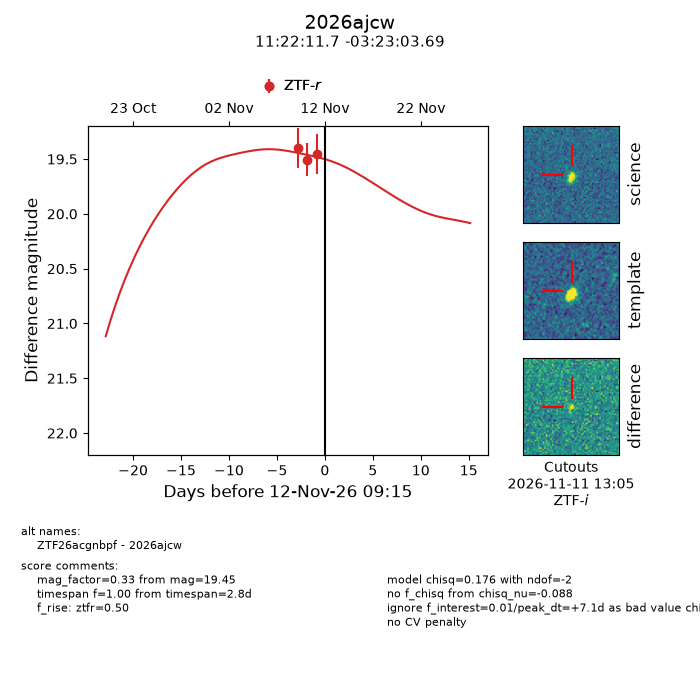
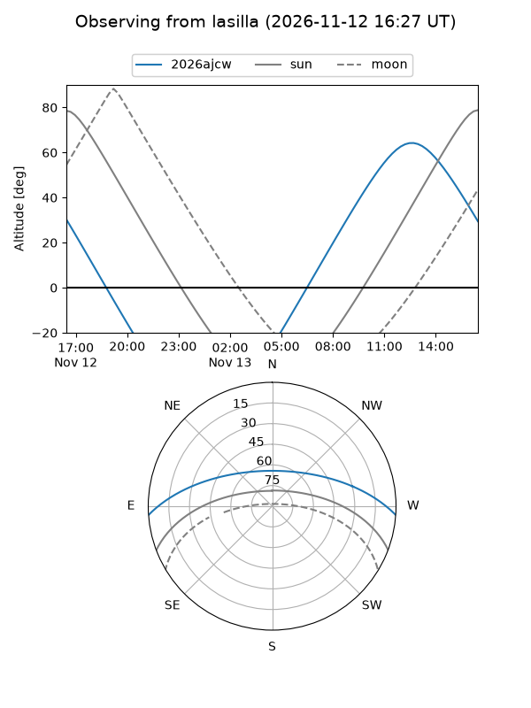
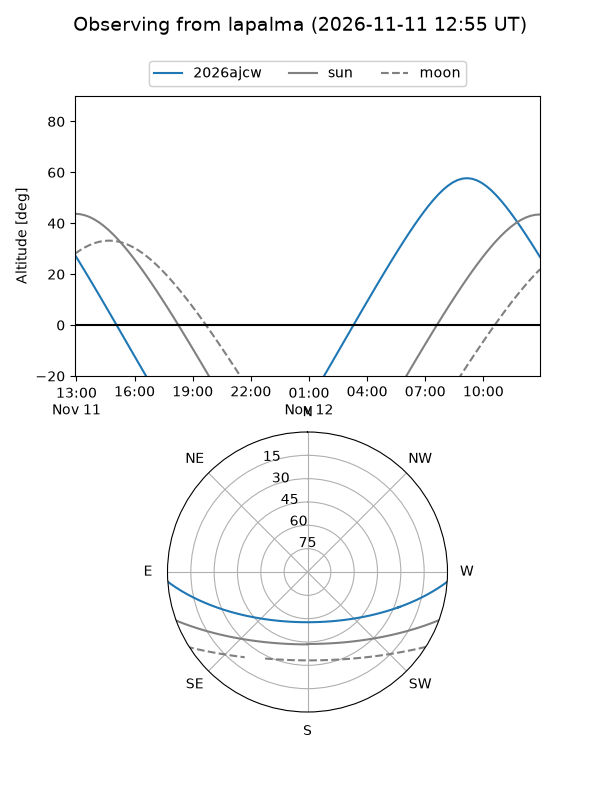
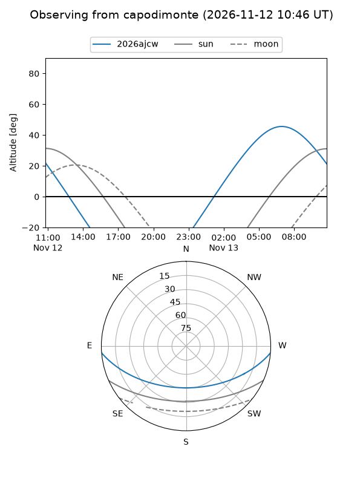
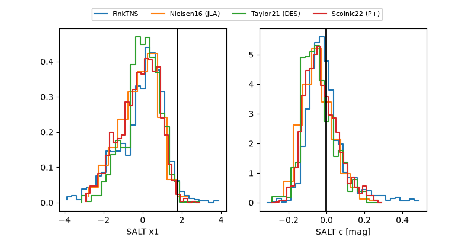

2026ajcw
Target 2026ajcw at 2026-11-12 09:20
Aliases and brokers:
FINK-ZTF: ztf.fink-portal.org/ZTF26acgnbpf
Lasair-ZTF: lasair-ztf.lsst.ac.uk/objects/ZTF26acgnbpf
ALeRCE-ZTF: alerce.online/object/ZTF26acgnbpf
YSE-PZ: ziggy.ucolick.org/yse/transient_detail/2026ajcw
TNS name: wis-tns.org/object/2026ajcw
Direct TNS query: direct search
alt names
ZTF26acgnbpf (ztf,fink_ztf)
2026ajcw (tns,yse)
Coordinates:
equatorial (ra, dec) = 170.5486,-3.38436
equatorial (HMS+DMS) = 11:22:11.67,-03:23:03.69
galactic (l, b) = (264.2686,+52.65594)
Flags:
peak dt: +7.1
Photometry:
last ztfr=19.45
3 ztfr detections
Lightcurve

Visibility



Additional plots
